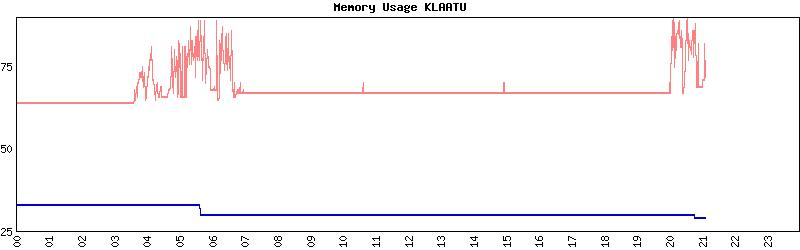

| HyperSPI++ Help |
hyperSPI++ provides graphical representations of selected VMS systems' performance indicators. These indicators can be used to help assess the overall performance of a system, or to assist in the identification of probable factors in instances of observed poor performance. For guidelines on interpreting VMS systems performance data see Performance Assessment Guidelines.
This facility has been provided primarily for those involved in VMS systems management, but is also available for the general user to gain some appreciation of what a particular system is doing at any particular stage of the day or week. (It has not been provided to facilitate the creation of a dozen systems performance experts :^) )
| How It Works |
The facility comprises two distinct components:
- The data gathering application. This permanently executes on selected systems. It obtains specific data from the VMS System Performance Interface once a second. This is accumulated for a period of one minute before being output as peaks and averages to on-disk storage. The one second collection period provides excellent granularity for observing peak behaviours, while the one minute recording period provides sufficient granularity for meaningful observation of short-duration trends (within an hour) as well as long-term behaviours (days or weeks), all without consuming significant amounts of mass-storage. The data gathering utility has minimal impact on the system it is recording, less than one-tenth of one percent of one CPU, measured on AXP systems.
- The data processing/presentation application. This is designed to use the hypertext-interface of a browser such as Mosaic, employing the forms HTML facility to provide a versatile and easy-to-use interface for selection of the data to be presented, as well as the browser's image display capabilities, to present graphs of performance data integrated with textual information. Data is processed on-demand, meaning graphs are generated dynamically, allowing simple, rapid assessments of current and recent performance, as well as longer-term overviews in versatile combinations of periods and factors.
| Selection Of Data |
A menu of options is presented allowing selection by radio-button (one of multiple), checkbox (one or more of multiple), and direct textual input.
- System
A series of radio-buttons allows selection of the system to be processed.
- Period
A series of radio-buttons allows selection of one of a number of standard periods for processing and display of the data. From 7am up to and including the current hour of the day is selected by default. Alternatively, the starting and ending time and date may be explicitly specified.
- Category
A series of checkboxes allow selection of one or more data categories for processing and display. A combination useful for basic assessment is selected by default. These may be deselected, others added, and so forth. More than four categories tends to become cluttered.When ready, click on the process button to process and present the selected data. The double-height graph checkbox allows graphs to be generated with an X axis twice the normal size. This can be useful when examining a specific category in greater detail, but can make a multi-category display more difficult to overview. The reset button returns all selectors to default.
A slightly more comprehensive menu is available.
| Presentation Of Data |
The data selected by category and period is presented as a single page of text and graphic. The page is titled with the system name, the period the data represents, and a short description of the system (number of CPUs, memory, etc.).
Graphs are simple two-dimensional representations providing time along the X axis (graduated in hours and days), and quantity along the Y axis (either as a percentage of total available or as an absolute quantity). A short description of the graph and applicable scales, averages and maxima are provided following the graph. Graphs may contain one or two quantities, presented as a line graph or pie chart. Separate colours may be used to represent multiple items on the one graph. The following example illustrates each component:

| hyperSPI++ v2.0; November 2000 |